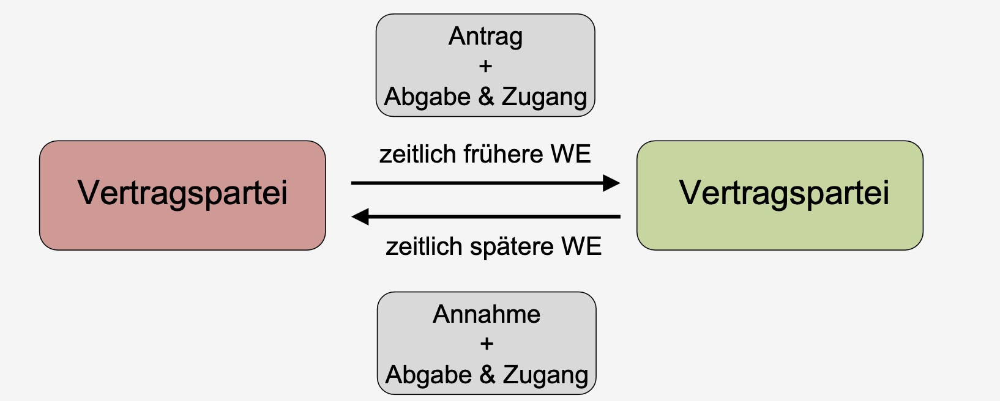

Zivilrecht Zusammenfassung#
Inhaltsverzeichnis
Verträge#
Vertrag: Rechtsgeschäft, das aus inhaltlich übereinstimmenden, mit Bezug aufeinander abgegebenen Willenserklärungen von mindestens zwei Personen besteht
Rechtsgeschäft: besteht aus mindestens einer Willenserklärung, die darauf gerichtet ist, eine bestimmte Rechtsfolge herbeizuführen.
Willenserklärungen#
Willenserklärung: private Willensäußerung, die unmittelbar auf das Herbeiführen einer Rechtsfolge gerichtet ist
Antrag: empfagnsbedürftige WE
Annahme: WE mit vorbehaltloser Zustimmung
Arten von WE
ausdrücklich = gesagt
konkludent = ergibt sich
Schweigen = nicht wichtig
WE zu unterscheiden von
Gefälligkeitszusage (bspw unter Nachbarn)
invitio ad offerendum (Auslage in Laden)
empfangsbedürftige WE: Abgabe und Zugang
Abgabe = willentliche Entäußerung einer Erklärung
Zugang = im Machtbereich (Möglichkeit der Kenntnisnahme)
Vertragsschluss#
= durch zwei übereinstimmende WE §433

Grundsatz des BGB = Privatautonomie
begrenzt durch:
Formerfodernisse (gesetzlich): §126ff
Geschäftsfähigkeit
7-17 Jahre: beschränkt geschäftsfähig, WE zählt wenn
rechtlich vorteilhaft
gesetzlicher Vertreter
Leistung mit eigenen Mitteln
18+: voll geschäftsfähig
Verbote
Hehlerei
Wucher
Sittenwidrigkeit (Ausnutzung Notsituation etc.)
Stellvertreter & Bote#
Bote: leitet fertige, fremde WE weiter
Stellvertreter: gibt eigene WE ab
Passivvertretung = vertritt Empfänger von WE
Aktivvertretung = vertritt Sender von WE
Voraussetzungen
Zulässigkeit
Abgabe eigener WE
Offenkundigkeit
im Rahmen der Vertretungsmacht
durch Vollmacht (Innen- / Außenvollmacht)
oder gesetzlich (Eltern)
durch Rechts-schein
Fall 1
Lamborghini Kaufvertrag
L will seinen Lamborghini verkaufen, weil es ein neues Modell gibt. Z spricht mit ihm und vereinbart mündlich einen Kaufpreis von 80.000€. 2 Tage später steht er vor der Tür mit dem Geld, L will jedoch nicht den Lambo rausrücken, da er von Dana ein besseres Angebot erhalten hat.
Anspruch auf Übergabe gemäß §433 BGB
Kaufvertrag: 2 übereinstimmende Willenserklärungen
Antrag: empfangsbedürftige Willenserklärung (von Z)
Zustandekommen hängt nur vom anderen ab
Abgabe des Antrags (hier mündlich)
Zugang und Kenntnisnahme von Vertragspartner (durch L)
Annahme: Willenserklärung (von L)
WE, durch die sich der Angebotsempfänger mit Vertragsschluss einverstanden erklärt
=> Vertragsschluss
Ergebnis: Anspruch auf Übergabe und Übereignung des Lamborghini aus §433
Fall Nachbarschaftshilfe
Nachbarschaftshilfe
Geschäftsmann G möchte zu einer wichtigen Konferenz. Allerdings springt sein Fahrzeug nicht an. Deshalbt bittet er seinen Nachbar N, ihn zum Flughafen zu fahren. N sagt spontan zu. Unterwegs geraten sie in einen heftigen Streit. N setzt daraufhin den G an der nächsten Raststätte ab.
Anspruch nach § 662 BGB
Willenserklräung des N
Abgrenzung Rechtsbindungswille | bloße Gefälligkeit
nach sozialer Bedeutung, Interessen der Handelnden
hier: Transport zum Flughafen ist durchaus sozialüblich
hier Gefälligkeit
=> kein Anspruch
Fall Stellvertretung
Stellvertretung
B bittet Sekretär S Geschenk für Mutter zu kaufen für max 50€.
S geht in Laden von V., kauft Blumen für 40€ und sagt dass Rechnung auf B
B verweigert V. die Begleichung später, da Mutter Blumenallergie
Kann V von B die Herausgabe von 40€ fordern?
aus §433 BGB II:
Kaufvertrag zw V und B?
Angebot des B?
Annahme des V (+)
=> Kaufvertrag
=> Anspruch des V an B
Vertragsende#
5 Arten
1. Erfüllung §362 = Bewirken der Leistung
richtige Leistung
richtige Art und Weise
richtiger Ort
richtige Zeit
richtiger Schuldner
2. Anfechtung $142: WE wird unwirksam rückwirkend
Gründe
Irrtümer §119
falsche Übermittlung §120
Unzulässige Willensbeinflussung §123
Voraussetzungen
Anfechtungsgrund
Anfechtungserklärung
Anfechtungsfrist
3. Widerruf
ohne Angabe von Gründen
nur für Verbraucher (§13) ggü. Unternehmer (§14)
Voraussetzungen
Widerrufsrecht §312 (außerhalb von Geschäftsraum, Fernabsatzvertrag)
formlose Erklärung
Frist (14 Tage nach Erhalt)
4. Rücktritt
beidseitig möglich
Vorraussetzungen §323
gegenseitiger Vertrag
Rücktrittsgrund
Frist erfolglos
Rücktrittserklärung
Abschlussgründe
Folgen §346
Rückgewähr Leistung
Wertersatz
Schadensersatz
5. Kündigung
= Beendigung von Dauerschuldverhältnissen (miete etc.)
ordentliche Kündigung:
keine Leistungstörung
Kündigungsfristen
außerordentliche Kündigung (§314)
Fall Widerruf
Widerruf
K bestellt Buch für 50€ am 15.11 für privat, wird geliefert am 20.11.
K mag das Buch gar nicht, fordert Widerruf am 2.12 per Brief, der am 6.12 ankommt
V meint, Verpackung entfernt => ist unverkäuflich, fordert 50€ ein
Kaufvertrag
Angebot der K (+)
Annahme des V (+)
Kaufvertrag (+)
Widerruf wirksam? §355
Verbrauchervertrag? §310
V = Unternehmer (+)
K = Verbraucher (+)
entgeltliche Leistung (+)
Fernabsattzvertrag (+)
=> Widerrufsrecht
Widerrufsfrist
Beginn §356 ab Erhalt (20.11)
Innerhalb Frist (4.12) abgesendet (+)
=> rechtmäßiger Widerruf, V kreigt kein Geld
Fall Blumenkauf
K bestellt Blumengesteck für Beerdigung an 09.11. V verpsricht, bis zu dem Tag fertig zu sein.
Am 09.11 will K Blumen haben, V sagt dass er noch 1 Tag braucht.
K erklärt „für null und nichtig“ und zahlt nicht.
Kaufvertrag (+)
Rücktrittsrecht §323
keine Leistung (+)
hier: Termin war entscheidend, wurde auch mitgeteilt
=> Rücktrittsrecht
Rücktrittserklärung (+) („Null und Nichtig“)
Folgen: Erlöschen der Leistung
=> nicht zahlen ist rechtmäßig
Schadensersatz#
Vertragspflichten:
Primärpflichten (§241)
Leistungspflicht
Rücksichtnahme
Sekundärpflihten
Rückabwicklung (§346)
Schadensersatz (§280)
Voraussetzungen Schadensersatz §280
Schuldverhältnis
Pflichtverletzung = nachteilige Abweichung
Vertretenmüssen §276 (Vorsatz / Fahrlässigkeit)
Schaden = unfreiwillige Vermögenseinbuße
Fall Pferdeturnier
Pferdeturnier
P richtet Reitturnier aus, an dem G mit Pferd Fanta für 150€ Teilnahmegebühr teilnimmt.
Beim Turnier trifft Fanta auf vorschriftswidrigen Fangständer und wird eingeschläfert
Schadensersatz einklagbar?
Schuldverhätlnis: Turnier für 150€ Teilnahme (+)
Pflichtverletzung:
Leistungspflicht: Turnier wurde ausgerichtet (+)
Rücksichtspflicht: sclecht aufgestellter Fangständer (-)
Vertretenmüssen
Vorsatz = absichtliche Pflichtverletzung (-)
Fahrlässigkeit (+) (auch wenn von Mitarbeiter aufgestellt)
Schaden = Pferd eingeschläfert = Einbuße (+)
=> Schadensersatzpflicht
Gewährleistung#
Rechte des Käufers nach §437 bei Mängeln
Voraussetzung: Mangel
Sachmangel $434
subjektive Anforderungen
objektive Anforderungen
Sachgemäße Montage
Rechtsmangel §435
Rechte des Käufers
Nacherfüllung
Rücktritt, braucht
Kaufvertrag
Fälligkeit
Mangel
Fristsetzung
Rücktrittserklärung
Minderung
Schadensersatz
Sachenrecht#
= Beziehung zw. Sachen und Personen
Sache §90: körperliche Gegenstände, beweglich oder unbeweglich
Eigentum §903 BGB: umfassendes dingliches Recht, nach Belieben mit Sache verfahren
Besitz §854: tatsächlcihe Herrschaft
Übereignung:
bewegliche Sache §929
Einigung
Übergabe
Berechtigung
auch gutgläubiger Erwerb §932
außer gestohlen §935
unbewegliche Sachen
Einigung (mit Anwesenheit bie Notar) §925
Eintragung
Berechtigung
wenn Grundbuch falsch, trotzdem ok §892
gesetzlicher Erwerb
Ersitzung §900
Verbindung §946
Fund §965
Fall bewegliche Sache
Autokauf
E ist Eigentümer Auto, Dieb D klaut dieses und verkauft an X. X kauft ohne in Fahrzeugbrief zu schauen. E will Auto von X
Anspruch auf Herausgabe von E an X, §985
E = Eigentümer?
ursprünglicher Eigentümer (+)
Eigentumsverlust durch Übereignung D an X: §929
Einigung zw. D und X (+)
Übergabe (+)
Verfügungsberechtigung (-)
X nicht Eigentümer (-)
gutgläubiger Erwerb?
Da nicht Fahrzeugbrief zeigen lassen (-)
X = Besitzer (+)
Kein Recht an Besitz
=> Herausgabenanspruch
Fall Hauseigentum
Hausübereignung
A ist Egentümer und stirbt. Sohn S lässt sich als Eigentümer eintragen (mit Erbschein) S übertragt an X. Danach Testament: Freund F ist Alleinerbe
Wer ist Eigentümer?
X, da gutgläubig erworben und Glaube an Richtigkeit des Grundbuches
Kreditsicherheiten#
Arten:
Personalsicherheit (Person mit Vermögen steht ein, Bürgschaft)
Realsicherheit (Gegenstand)
Realsicherheiten:
Sicherungsübereignung §930: Eigentum geht an Gläubiger, bleibt aber im Besitz des Schuldners)
Eigentumsvorbehalt §449: Eigentum bei Käufer mit Bedingung, bspw. Ratenabzahlung)
Hypothek §1113: Eintragung des Pfändungsrechts in Grundbuch
nicht Anspruch an Zahlung
heute eher Grundschuld (nicht an eine bestimmte Forderung gebunden)
Bürgschaft §765
Deliktrecht#
Schadensersatz außerhalb von Vertragsverhältnis = §823
Rechtsgutverletzung
Leben, Körper, Gesundheit = Unversehrtheit
Freiheit = Bewegungsfreiheit
Eigentum = Beschädigung von Sachen
sonstige Rechte = allg. Persönlichkeitsrecht (Beleidigung), Recht am Gewerbe (Streik, Boykott)
Verletzungshandlung (Tun oder Unterlassen)
Haftungsbegründete Kausalität (Handlung -> Rechtsgutverletzung)
Rechtswidrigkeit der Handlung (Einwilligung, Notwehr)
Verschulden
Vorsatz / Fahrlässigkeit
Deliktsfähig (> 18J)
Schaden (Vermögenseinbuße)
Haftungsausfüllende Kausaliät (Rechtsgutverletzung -> Schaden)
Handelsrecht#
how to Kaufmann nach HGB
Firma §17 HGB: Name, unter dem Kaufleite Geschäfte betreiben
Handelsregister: zentrales Medium zur Publizität
Handlesgeschäft: Geschäfte eines Kaufmanns, Vereinfachung von Rechten
Gesellschaftsrecht#
Unternehmensformen
Einzelunternehmen (Kaufmann, Freiberufler)
Personengesellschaft (OHG, GbR, KG)
Kapitalgesellschaft (AG, GmbH)
Gesellschaften
Gesellschaft bürgerlichen Rechts GbR
formlose Gründung
Haftung: persönlich und Gesellschaftsvermögen
Offene Handelsgesellschaft
wie GBR nur mit Handelszweck
nur mit EIntragung ins Handelsregister
Kommanditgesellschaft
Vollhaftung Komplementäre
beschränkt Haftung Kommanditisten
GmbH
beschränkte Haftung (nur G.Verm. = 25.000)
Notar + Handelsregister
AG
Vorstand + Aufsichtsrat
höhers Basiskapital (50.000)
Aktienausgabe erlaubt
=> Form wählen nach Nutzbarkeit